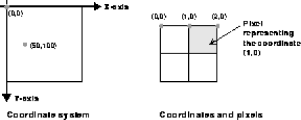
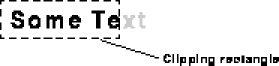

View class centers around drawing a view's contents and managing issues such as clipping, drawing subviews, making views transparent, and using offscreen drawing buffers. The View class makes it easy for subclasses to implement these details.
Each view has a bounds, a rectangle defining the location and size of the View within the application's user interface. In the IFC, this bounding rectangle is represented by the Rect class. Any drawing performed by a view is clipped to this rectangle. The view receives events, such as mouse clicks, only if they fall within the bounding rectangle.
View class when your application needs to draw to the screen. The draw method calls the drawView method, which performs the actual work of drawing to the screen.
Every component that is a subclass of the View class implements a drawView method; some components also have special methods that handle specific aspects of the drawing. The names of these special methods begin with drawView, and drawView calls these methods when it draws the component. For example, drawView calls drawViewGroove to draw the groove of a slider and drawViewKnob to draw the slider's knob.
You never call drawView or any method prefixed by drawView directly. When you call draw, it redraws a bounding rectangle that you specify, or the entire view, if you do not specify a bounding rectangle. If the redrawn rectangle intersects the bounds of a subview, the draw method also calls the drawView method of the subview.
When you create a custom view, you override its drawView method to specify drawing behavior, but you still draw to the screen by calling draw. See "Drawing custom views" on page 39 for more information. To customize specific aspects of a component's drawing, override methods prefixed by drawView. See "Custom drawing" on page 40 for more information.
The IFC imaging model
The IFC imaging model is based on the imaging model provided by the AWT. An application drawing area is represented by a two-dimensional grid, with its origin in the upper-left corner, the positive x-axis extending to the right, and the positive y-axis extending down. Coordinates are integers and fall between physical screen pixels. The pixel corresponding to a coordinate occupies the space down and to the right of the coordinate.
IFC drawing coordinates

g.setFont(font.helvetica12);
A graphics object also maintains a clipping rectangle, which delimits the area in which the graphics object can draw. Any part of the intended output that falls outside of this rectangle is not displayed
The clipping rectangle

g.setColor(Color.green);
g.drawStringAt("Some text",0,0); How the IFC implements draw
You never call drawView directly because drawing a view typically requires some preparation, such as setting the graphics object's' clipping rectangle and calling the drawView methods of the view's descendants.
You call draw to draw to the screen because the draw method manages these details for you. The following code shows how the IFC implements the draw method:
public void draw(Rect clipRect) {
Notice that the graphics object passed to the
Graphics g;
Rect drawRect;
g = mainRootView().graphics();
g.pushState();
drawRect = new Rect(clipRect);
drawRect.intersectWith(0, 0, width(), height());
g.setClipRect(drawRect);
g.translate(bounds().x, bounds().y)
drawView(g);
drawSubviews(g);
g.popState();
}drawSubviews method has already been clipped to the view's bounds. Any drawing that a subview performs will be clipped to its superview's bounds.
Implementation of drawView
All the code required to draw a subview resides in its drawView method. For example, the drawView method of a component might look like this:
The public void drawView(Graphics g) {
g.setFont(font.helvetica12);
g.setColor(Color.green);
g.drawStringAt("Some text",0,0);
}drawView method takes a single argument, the graphics object that the view uses to perform its drawing operations. The drawing logic of the View class sets the grahics object's clipping rectangle to the view's bounds, so that no drawing occurs outside the view. Because a graphics object is reused, never assume anything about its current state, such as the current drawing color or font.
draw method of the View class when your application needs to draw to the screen. For example, the following application contains of a button that changes the color of the background:
import netscape.application.*;
When a user clicks the button, the
public class Draw1 extends Application implements Target {
Button button;
public void init() {
super.init();
// Change the color of the background
mainRootView().setColor(Color.yellow);
// Create a button
button = new Button(24, 146, 100, 24);
button.setTarget(this);
button.setTitle("Change color");
mainRootView().addSubview(button);
}
public void performCommand(String command, Object arg) {
if (mainRootView().color().equals(Color.yellow))
mainRootView().setColor(Color.lightGray);
else
mainRootView().setColor(Color.yellow);
mainRootView().draw();
}
}performCommand method executes and changes the color of the background. See "Communication between objects" on page 73 for information about responding to user interactions in this way; for now, you only need to look at the code within performCommand.
draw method of the view's superview. The draw method, in turn, calls the drawView method of the view you created.
When you subclass View to create a custom view, specify how this new view should be drawn by overriding the drawView method of View. For example, the following code creates a gray rectangle:
public class GrayRectangle extends View {
public GrayRectangle(int x, int y, int width, int height) {
super(x, y, width, height);
}
public void drawView(Graphics g) {
g.setColor(Color.lightGray);
g.fillRect(0, 0, width(), height());
}
}
In this example, the constructor specifies the dimensions of the rectangle, and the drawView method fills the entire rectangle with the color light gray.
View contain methods whose names begin with drawView, as described in "How drawing works" on page 35. These methods specify how individual areas of the component should be drawn. You can override these methods to implement custom drawing for a component.
For example, the Button class implements the drawViewBackground, drawViewInterior, and drawViewTitleInRect methods to draw different areas of a button. If you want to create a button with a rounded, three-dimensional appearance, you can extend Button and override its drawViewInterior method, as shown in the following example:
public class RoundedButton extends Button {
In this example,
public RoundedButton(int x, int y, int width, int height) {
init(x, y, width, height);
}
public void drawViewInterior(
Graphics g, Image image, Rect interiorRect) {
int i;
int x1 = interiorRect.x;
int y1 = interiorRect.y;
int x2 = x1 + interiorRect.width;
int y2 = y1 + interiorRect.height;
// Start at the top with a brightness of 0.8;
float brightness = 0.8f;
// Decrement brightness by a small amount as we go down
float f = 0.5f / (float)interiorRect.height;
// Fill the Rect with lines of gradually decreasing brightness
while (y1 < y2) {
g.setColor(Color.colorForHSB(0.0f, 0.0f, brightness));
g.drawLine(x1, y1, x2, y1);
y1++;
brightness -= f;
}
// Now draw the title
g.setColor(titleColor());
drawViewTitleInRect(
g, title(), font(), interiorRect, Graphics.CENTERED);
}
}RoundedButton is an extension of Button. The drawViewInterior method of RoundedButton specifies that the interior of the button is drawn with individual lines of gradually decreasing brightness, creating the illusion of a rounded button.
You draw a RoundedButton object as usual: call the draw method of the view's superview. The draw method calls the drawView method of RoundedButton, which in turn calls the drawViewInterior method.
drawView method must completely draw the area within its bounds. However, you may not want to draw this area completely. For example, you may want to draw a button as a circle and let the contents of its superview appear around the button's edge. In this case, the button should not completely redraw the area defined by its bounds. To redraw it correctly, you must first draw the button's superview (clipped to the view's bounds), then draw the button.
The setTransparent method informs the IFC library that a view does not draw its contents completely. When the view receives a drawing request, it redraws its superview (or nearest opaque ancestor).
For example, the following code implements the class SpecialButton, which draws a button as an oval:
public class SpecialButton extends Button {
public SpecialButton(int x, int y, int width, int height) {
super(x, y, width, height);
}
public void drawViewInterior(Graphics g, String title,
Image image, Rect interiorRect) {
// Draw the button as an oval
g.setColor(Color.darkGray);
g.fillOval(0, 0, width(), height());
// Now draw the button title
g.setColor(titleColor());
drawViewTitleInRect(g, title(), font(), interiorRect,
Graphics.CENTERED);
}
}
The SpecialButton class overrides the drawViewInterior method of Button to draw the oval button.
The following code instantiates an object of the SpecialButton class; the setTransparent method specifies that you do not want to draw the entire default button.
SpecialButton button;
public void init() {
super.init();
// Create a button
button = new SpecialButton(24, 146, 100, 24);
button.setTransparent(true);
button.setTitleColor(Color.cyan);
button.setTitle("OK");
mainRootView().addSubview(button);
}
setBuffered method of View for this purpose. When the rendering is complete, the final result is displayed on screen automatically.
For example, to use a drawing buffer for the scroll group textGroup defined in "Making views scrollable" on page 29, add the following code:
textGroup.setBuffered(true);
Although using a drawing buffer alleviates flicker, it increases memory consumption. It also decreases drawing performance because the IFC copies the final result from the offscreen buffer to the screen.